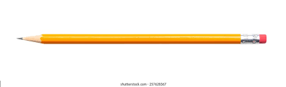
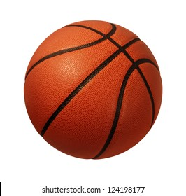

CASE STUDY- Mobilenet vs. Google Lens
-
Pencil

Output on Google Lens -
pencil
Output on Mobilenet Model -
nail
Result - Google Lens is more accurate.
-
Water Bottle

Output on Google Lens -
bottle of the water picture
Output on Mobilenet Model -
punching bag
Result -Google lens was more accurate
-
book

Output on Google Lens -
close up of an open book
Output on Mobilenet Model -
Lampshade
Result -google lens was more accurate
-
basketball

Output on Google Lens -
basketball
Output on Mobilenet Model -
Basketball
Result - both were right
Most of the time Google lens was more accurate.